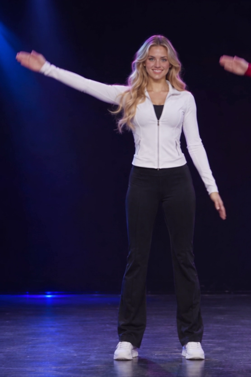

D-7 · POSE STUDIO
포즈와 문장이
관절을 따라 이미지가 됩니다.
포즈 + 프롬프트 → LED 관절 → 생성 이미지 / 댄스 영상
영상 제작 도구 선택
힉스필드 외 무료 사용 옵션을 선택할 수 있습니다. 선택한 서비스에서 생성한 클립을 가져와 음악과 함께 41초로 편집합니다.
도구 목록 로딩 중

도구 선택은 생성 서비스 연결·프롬프트 준비 기능입니다. 로그인·이미지 업로드·생성은 해당 서비스에서 직접 진행합니다. 무료 한도는 계정에 따라 달라지며, LED 관절의 정확한 전이는 모든 도구에서 지원하지 않습니다.
1. 포즈와 프롬프트 입력
사진은 브라우저에만 표시됩니다. 새 관절 검출은 Colab에서 실행합니다.
빠른 데모는 실제 생성한 고정 영상을 재생합니다. 동작 키워드는 LED 미리보기에 반영됩니다. 바꾼 사진·문장으로 새로운 이미지를 생성하려면 Colab 노트를 실행하세요. 새 이미지 생성은 위 Colab 열기 버튼으로 실행합니다.
2. 참조 포즈

생성 댄스에서 추출한 가상 성인 인물3. LED 관절
관절 시간표 로딩 중4. 생성 댄스 + 음악
Higgsfield Genjutsu · 20.5초 × 2무료 도구에서 만든 클립 가져오기 → 41초 MP4
여러 짧은 클립을 원하는 순서로 배열합니다. 합친 길이가 짧으면 반복하고, 길면 잘라 41초로 저장합니다. 새 AI 장면을 만드는 단계는 위 제작 서비스에서 진행합니다.
선택하지 않으면 기존 41초 데모의 오디오를 사용합니다. 가져온 파일은 '41초 MP4 저장'을 누를 때 이 PC의 로컬 서버로만 전송됩니다.
가져온 클립 미리보기
로컬 합성 기능을 확인하는 중입니다.
포즈 조건 이미지 실험
01 ↔ 02: 같은 포즈·다른 프롬프트 / 01 ↔ 03: 다른 포즈·같은 프롬프트


실제 관찰은 README와 노트북 마지막 셀에 기록했습니다.
제출 준비 파일 전체
제출 준비 산출물입니다. 학습 사이트 제출란에 GitHub URL을 등록하는 단계는 별도입니다.